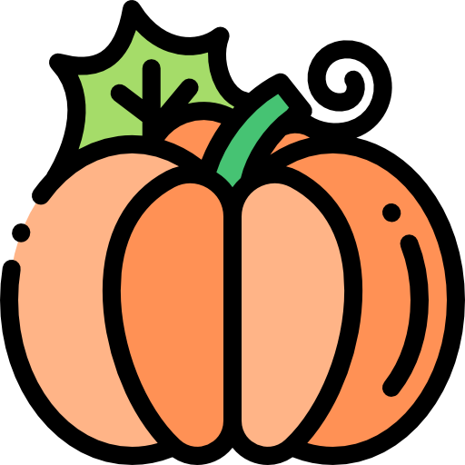
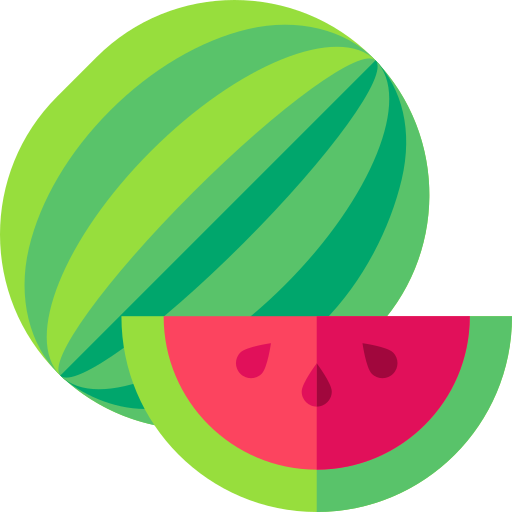

~對貓咪來說有營養的食物~
1.鮭魚
鮭魚含有Omega 3，對貓貓的心臟和免疫系統都有幫助。
豐富的油脂也有助於貓貓毛皮滑順柔亮。
飼主記得先將魚刺挑乾淨，貓貓才能安心吃喔
2.雞胸肉
雞胸肉含有優質的動物性蛋白，雞肉也是許多貓咪喜愛的肉類。
記得在料理時
不要加鹽，才能保護貓咪的腎臟健康。
3.木瓜
木瓜中豐富的酵素，有助於蛋白質分解，很適合貓咪補充。
建議挑選無瘀斑、色澤飽滿的木瓜，必將內籽去除乾淨。
但木瓜糖分高，請飼主適量、分次補充，以免貓咪發福喔！
4.花椰菜
花椰菜含有著豐富的纖維素與維他命 C ，是貓咪較能接受的「菜味」。
雖然貓咪是肉食性動物，但適量補充纖維，仍有助腸胃功能運作。

5.南瓜
南瓜的產季在秋天，包含葉酸、鈣、磷、鉻…等多種微量營養素。
但南瓜屬於高 GI 水果，容易讓血糖快速上升，有糖尿病貓咪應小心避免！

6.西瓜
西瓜有助於貓咪補充水分，也有利尿的功效，炎熱的夏天更是開胃的好選擇。
但西瓜糖分較高、籽也多，請適量餵食、小心去籽以免貓咪拉肚子呦。
7.無調味優格
優格含有維生素B群和鈣質，更將部分乳糖轉化為乳酸，較適合乳糖不耐症的貓咪。
若要餵貓咪吃優格，請選擇無添加、無調味的優格才更健康喔！
8.無鹽起司
起司能提供蛋白質、脂質與鈣質，濃郁的香氣貓咪也非常喜歡。
請選擇無鹽起司，以免鈉攝取過量反傷了貓咪身體喔！
9.胡蘿蔔
雖然貓咪無法自行將胡蘿蔔素轉化為維生素A…
但胡蘿蔔的營養成分高，仍有助於補充多種微量維生素。
生胡蘿蔔不好消化，建議煮熟後切成小塊或切丁乾燥後再給貓咪吃更好喔！
10.熟雞蛋
雞蛋是很好的蛋白質來源，貓貓胃口不好或是生病的時候可以餵雞蛋補充能量與營養。
但記得將雞蛋煮熟，避免攝取過量，以免膽固醇過高喔！